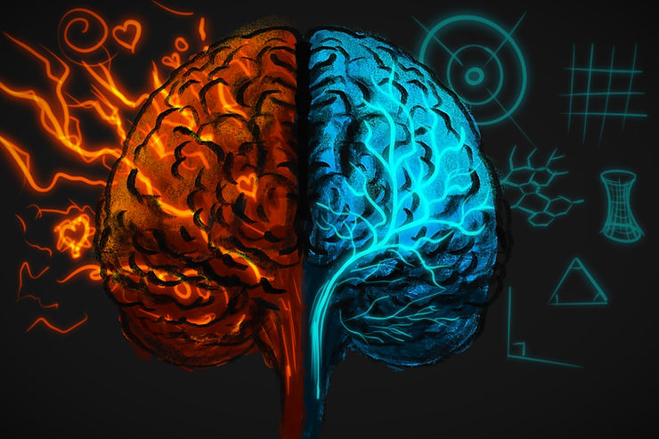

What Is ADHD Emotional Intensity
If you have an ADHD brain, you probably know this feeling well. Emotions can arrive fast, loud, and overwhelming. They can be hard to slow down, hard to regulate, and even harder to explain to people who do not experience them the same way.
This is not a character flaw.
It is not a lack of effort.
It is not weak willpower.
It is wiring.
Neurologically, the ADHD brain tends to have a powerful emotional accelerator and a brake system that is slower to engage. Below are eight key neurological differences that help explain why emotional intensity shows up the way it does in ADHD.
1. Temporal Discounting: Future Self vs Present Self
ADHD brains tend to prioritize immediate rewards over future ones. This is known as temporal discounting. From a neurological perspective, long-term benefits register as less emotionally motivating than short-term comfort.
This makes emotional regulation more difficult because most regulation strategies involve discomfort now for relief later. Getting enough sleep, preparing for the morning, exercising, and setting boundaries all require investing now for a delayed payoff. The ADHD brain often struggles to recognize that future benefit as worth the present cost.
Real life example: You know that prepping your morning the night before will reduce stress and meltdowns the next day. But that prep requires cutting into your only real downtime. The short-term reward of relaxing wins, even though you logically know the long-term cost.
While temporal discounting is not always isolated in ADHD research, it is commonly discussed in clinical and behavioral ADHD models.
2. Filterless Sensory Processing: When Everything Rushes In
The ADHD brain often processes more sensory information at the same time and filters out less background input. This can power creativity, fast connections, and novel problem-solving. It also increases vulnerability to overstimulation.
Because emotional regulation depends on sensory regulation, sensory overload directly increases emotional intensity. When the environment feels chaotic, the nervous system reacts as if it is under threat.
Research confirms that ADHD is frequently associated with atypical sensory modulation and emotional dysregulation.
3. Working-Memory Differences: When Emotions Take Over
Working memory is the brain’s short-term holding space for thoughts, context, and regulation tools. In ADHD, this workspace is often limited.
When a strong emotion enters that space, it can consume all available mental capacity. This pushes out perspective, coping strategies, and rational reminders. The result is emotional flooding and overwhelm.
Real life example: Your boss offers one small critique after giving praise. That single comment dominates your thoughts for the rest of the day. You cannot access the positive feedback or your usual emotional tools. The emotion fills the entire mental workspace.
Research suggests that impairments in working memory may significantly contribute to emotional dysregulation in adults with ADHD.
4. Biased Emotional Encoding: Negative First, Positive Later
Some studies suggest that ADHD brains may encode negative emotional stimuli more quickly and more deeply than positive stimuli. Positive input may not receive the same level of early neurological processing.
This can make criticism feel far more intense than praise feels reassuring. Even when feedback is balanced, the brain may emotionally register it as mostly negative.
This neurological bias helps explain why rejection sensitivity, shame, and emotional reactivity are so common in ADHD.
5. Sticky Mental Gears: Difficulty Shifting Emotional State
Cognitive flexibility is the brain’s ability to shift between thoughts, emotions, and tasks. In ADHD, this flexibility is often impaired. Neural signaling between networks can be less efficient.
When a negative emotional state activates, the brain struggles to disengage from it. This creates rumination, emotional spirals, and the feeling of being mentally stuck even when you want to move on.
Real life example: Your partner makes a quick comment about a messy counter. Your brain latches onto it, replaying the moment over and over. You cannot shift into work mode or enjoyment mode because your mental gears are locked in frustration.
6. Emotional Identification & Social Perception Differences
Adults with ADHD often struggle to accurately read emotional signals from others such as tone, micro-expressions, and body language. This can lead to misunderstandings, unintentional conflict, and relational strain.
When you miss early signs of someone becoming upset, the emotional fallout can feel sudden and overwhelming. This can reinforce shame, guilt, and rejection sensitivity.
Clinical research increasingly recognizes social-emotional processing differences as part of adult ADHD presentations.
7. “Sticky” Negativity: Tendency to Dwell on Pain
ADHD brains often struggle to disengage from negative emotional material once it captures attention. Even when something is objectively small, the emotional weight can persist.
This creates prolonged rumination and emotional carry-over into unrelated situations. Shifting attention toward neutral or positive experiences requires more effort than the nervous system may currently support.
The American Psychological Association now recognizes emotional dysregulation as a major and under-recognized feature of adult ADHD.
8. Differences in the Default Mode Network: Hardwired for Rumination
The Default Mode Network (DMN) is the brain system responsible for mind-wandering, self-reflection, memory recall, and internal dialogue. In neurotypical brains, the DMN quiets during focused, goal-directed activity.
In ADHD, the DMN often stays active in the background, even when trying to concentrate. This means emotional memories, worries, and self-talk continue running alongside whatever task you are attempting.
This constant background activity increases emotional load, anxiety, and rumination.
Why All of This Matters
Understanding the neurological roots of emotional intensity changes everything.
It shifts the story from: “Why am I like this?” to: “My brain processes emotion differently.”
When you understand the wiring, you stop trying to force neurotypical solutions onto a neurodivergent nervous system. You begin to build systems that actually support regulation instead of fighting it.
This is where coaching, skill-building, sensory-aware routines, and emotional literacy become powerful tools.
A Note on Research Limitations
While neuroscience has made significant progress in understanding ADHD and emotional regulation, the findings are not always perfectly consistent. Sample sizes are often small. ADHD subtypes differ. Medication status changes brain activity. Emotional processing is influenced by trauma, attachment, and environment.
Some studies show clear neural activation differences in emotional regions like the amygdala and prefrontal cortex. Others show less dramatic contrasts. This tells us the story is complex, layered, and still unfolding.
What remains consistent is this: Emotional dysregulation is one of the most impactful but least acknowledged challenges of ADHD across the lifespan.
References:
Center for ADHD. (2024). Key Differences in ADHD Emotion Processing. https://www.thecenterforadhd.com/wp-content/uploads/2024/07/10-Key-Differences-in-ADHD-Emotion-Processing-updated.pdf
Ricon, T. et al. (2023). Sensory and emotional dysregulation in adults with ADHD. https://pmc.ncbi.nlm.nih.gov/articles/PMC10017514/
Alperin, B. et al. (2021). Working memory contributions to emotion dysregulation in ADHD. https://link.springer.com/article/10.1007/s11682-021-00532-6
Shaw, P. et al. (2018). Emotion processing and ADHD. Frontiers in Human Neuroscience. https://www.frontiersin.org/journals/human-neuroscience/articles/10.3389/fnhum.2018.00100/full
American Psychiatric Association. (2024). Managing emotion dysregulation in adult ADHD. https://www.apa.org/monitor/2024/04/adhd-managing-emotion-dysregulation
Wikipedia. Default Mode Network overview. https://en.wikipedia.org/wiki/Default_mode_network
Zhang, D. et al. (2024). Default mode network dysfunction in ADHD. https://pmc.ncbi.nlm.nih.gov/articles/PMC11325164/
Cai, W. et al. (2021). DMN connectivity and emotional regulation in ADHD. https://www.sciencedirect.com/science/article/pii/S1053811921010016